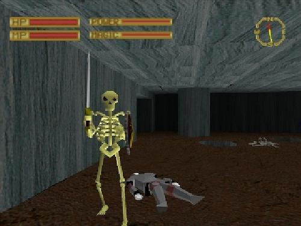
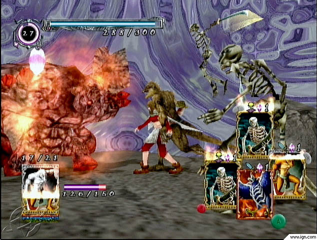
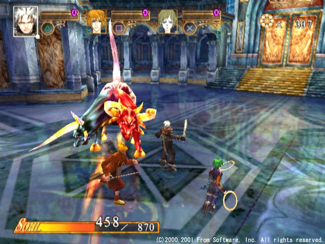
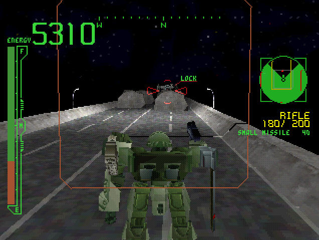
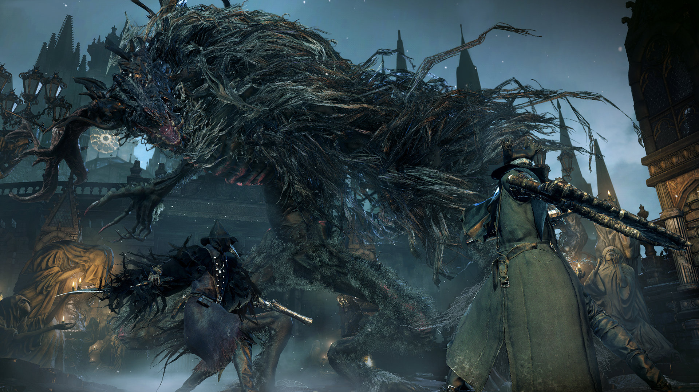
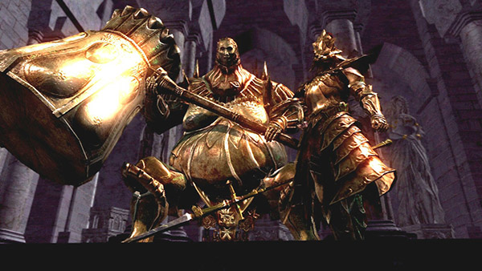
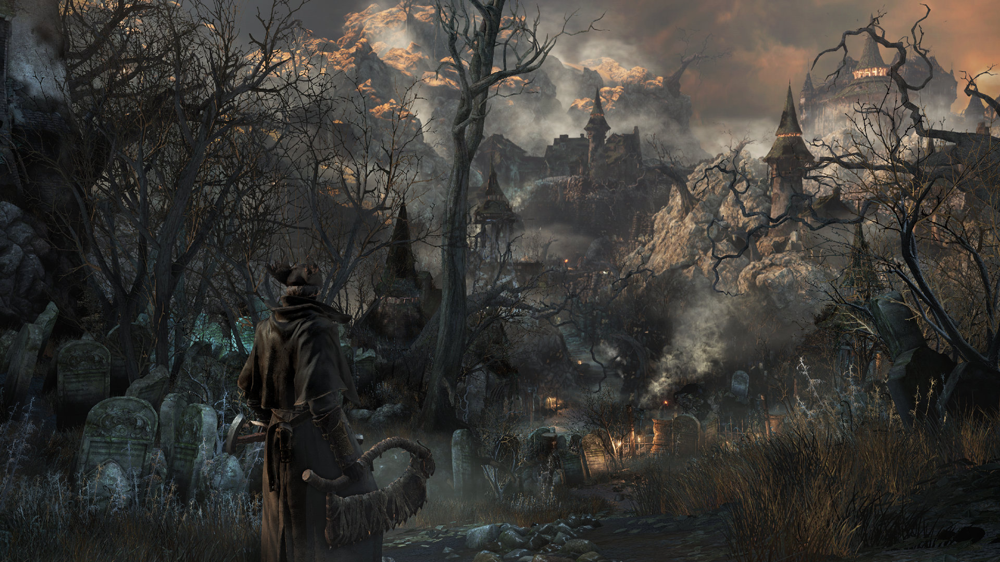

From Software is hard to escape these days. The studio is well-known as the developers of the beloved and challenging Dark Souls, Demon’s Souls, and the upcoming Bloodborne. They’ve elevated From Software from mere cult status to the brink of game-industry stardom, and the developer’s rise did not go unnoticed. Last May, the massive Kadokawa Corporation acquired From as part of their expanding video-game empire.
Yet From Software crafted games long before Demon’s Souls thrust them into the limelight. The company’s history runs through the very first PlayStation RPGs, stealth-fueled ninja series, rabbit-themed puzzle games, and a wealth of giant robots. Even now, as Bloodborne looms and dominates From’s image, there’s more to the company.
Video games and From Software were strangers at first. The Shibuya-based company formed in 1986 as a developer of more practical office software, and that suited From just fine for years. By 1994, however, the industry had changed. The CD at last displaced cartridges as a cheaper media format, and Sony’s new PlayStation appealed to many software developers. The system had no RPGs at its early December launch in Japan, but From Software provided one just a few weeks later. Their King’s Field is not a conventional, anime-tinged RPG, but rather a first-person quest through polygonal catacombs and cursed lands. It’s a dungeon hack in 3D form, and as such it refused to take it easy on players—a tactic that From Software would maintain decades later.
The original King’s Field never came to North America, but it sold well enough to put From Software to work on a sequel. Arriving on the PlayStation in 1995, the second King’s Field drew attention from domestic publisher ASCIIware. In a turn similar to the Final Fantasy treatment, King’s Field II became King’s Field for its North American trip while King’s Field III was known in the West as King’s Field II. The sequels offer more complex adventures with expanded stories and combat, but both stick to the first-person perspective, blighted lands, and often lethal hazards that guide the original. They gathered a small fan base. It was nothing to rival the attention given Final Fantasy VII and most other Japan-made RPGs. But the tough, straightforward approach of a King's Field held value, and stand as proof that From's design ethos has largely remained unchanged in subsequent decades.
From Software drifted away from King’s Field after the third installment. Echo Night, their 1998 offering, used a similar first-person perspective for an adventure game - a ghost story where direct confrontation gives way to exploration, character interaction, and puzzles. Agetec would release the original Echo Night in North America, though the sequel wouldn’t arrive here. From Software didn’t revisit the series until 2004’s Echo Night: Beyond, which moves the haunting themes to a lunar science-fiction stage.
From Software would not forget King’s Field in spirit, and their later RPGs reflected this. Shadow Tower, released in 1998 on the PlayStation, is effectively a King’s Field follow-up in its first-person crawl through monster-infested mazes. Some reviewers lambasted the game when Agetec localized it in 1999, but many a King’s Field fan found satisfaction in Shadow Tower.
Just as they had done for the original PlayStation’s launch, From Software embraced the PlayStation 2 early. One of two launch-window RPGs, Eternal Ring resembles King’s Field in its approach, and not just because it chronicles a young mage’s journey across a cursed island. Aside from the usual first-person hacking and exploration, Eternal Ring offers a customization system where rings grant new abilities.
From Software’s other initial PlayStation 2 RPG, Evergrace, ventured into relatively new territory for the company. It's an action-RPG, but one with a third-person view closer to The Legend of Zelda: Ocarina of Time, Alundra 2, or Threads of Fate. Its story proves more elaborate than past From Software RPGs, though its Palmira Action System parallels Eternal Ring in customized upgrades.
RPGs continued to feed From throughout the PlayStation 2 years. Evergrace II (a.k.a. Forever Kingdom) and King’s Field IV saw official localizations, though Shadow Tower: Abyss received only a fan translation years later. A new series beckoned From to the GameCube in 2002: Lost Kingdoms. The original game introduces a battle system played entirely through cards, as its heroine races around the field of combat and deals out attacks depending on her deck arrangements. A sequel followed in 2003, and both came to the West.
Some of From Software’s RPG adventures didn’t bear fruit. Evergrace and Lost Kingdoms bowed out after two games apiece, and only the King’s Field line and its cousins attracted strong followings. Fortunately, role-playing games were not From’s sole expertise.
Upon establishing itself with the King’s Field series, From looked to other genres. Released in 1997, Armored Core deals with a thoroughly common theme in Japan’s game market: mecha. It was not the first 3D giant-robot action game, nor was it the first to offer customizable robots built from polygons. Yet Armored Core brought the two ideas together with a cohesion and variety few other titles could offer. The 3D environments were quite large and impressive for a PlayStation title, and the game offered plenty of parts to modify one’s chosen robot—or “Core,” as they’re called.
With Armored Core, From struck adroitly at mecha fandom everywhere from Gundam-model sculptors to Battletech role-players, and its base expanded with the PlayStation follow-ups Project Phantasma and Master of Arena. In testament to the strong cult surge, Tips and Tricks magazine ran a regular column devoted to Armored Core. Fans even mailed their memory cards to the publication just to show off their Core creations in print.
Armored Core continued onto the PlayStation 2, with its official numbered sequel among the initial round of games for the system. Notably, its appearance made From Software the most prominent developer in the PlayStation 2’s North American launch, which included Armored Core 2 as well as Eternal Ring and Evergrace. Early PS2 owners might not have known From’s name, but they were playing a good chunk of From’s catalog. Armored Core’s fans rarely wavered in their devotion to the series, and every major title in the series, from the sequel’s Another Age expansion to the recent Verdict Day, made the trip to North America and Europe
Mecha games replaced RPGs as From's specialty, and Armored Core wasn’t alone. The company’s first mecha experiment was Frame Gride, a Dreamcast arena fighter that put a fantasy-themed spin on mechs. Players can customize their machines much like Armored Core robots, and anime fans saw echoes of The Vision of Escaflowne, Aura Battler Dunbine, and Panzer World Galient in the designs. It wouldn’t be seen outside of Japan, however. Publishers snatched up odd Dreamcast games from Seventh Cross Evolution to Elemental Gimmick Gear, but Frame Gride escaped notice.
Murakumo: Armored Mech Pursuit gave From Software more exposure on the Xbox in 2002, even though it’s regarded as one of the company’s worst mecha titles. There’s more affection for Chromehounds, a 2006 action game that features extensive customization and online play (though the official servers closed in 2010). Some disliked the game’s slow pace and limited graphics, but that didn’t stop it from pulling in the same fan base as Armored Core.
Outside of the Armored Core series, From Software’s most famed mecha creation may be an Xbox release called Metal Wolf Chaos. In contrast to the relatively grim tone of Armored Core, Metal Wolf Chaos finds the President of the United States, Michael Wilson, piloting a combat mecha into battle against a vicious rebellion led by his traitorous VP. From the moment the Commander in Chief’s mecha bursts out of the White House to the sub-orbital surfing finale, it’s a marvelously absurd game. While its voice-overs are in melodramatic English, no publisher in North America touched it. And so Metal Wolf Chaos reliably comes up whenever fans discuss the most interesting games never localized.
From Software also found a natural home with actual licensed anime-mecha in the Another Century Episode series. Spanning the PlayStation 2 and PSP, the series features machines from Gundam series, Macross titles, Code Geass, Full Metal Panic!, and even From’s own Armored Core. It found a much kinder reception than From’s first licensed work, the mediocre PlayStation action game Spriggan: Lunar Verse.
From Software’s action games routinely involved mechs, but the developer stretched itself creatively with Otogi: Myth of Demons. Based rather loosely on the life of Minamoto no Yorimitsu, the game follows an imperial assassin named Raikoh on a journey through the demon world. Otogi’s impressive, largely destroyable environments and versatile moves set it apart from the pack of other Xbox games, and Otogi 2: Immortal Warriors broadened the playable cast and prettied up the scenery. Both games spent the Xbox lifespan underappreciated, failing to garner the same mass appeal of Tecmo’s Ninja Gaiden or Capcom’s Devil May Cry. Time might give Otogi its due, however. Today the games are considered among the best action titles of their era.
From would go on to release other one-offs. The Xbox 360’s Ninja Blade once again found From Software chasing Tecmo’s Ninja Gaiden in popularity, and The Adventures of Cookie and Cream, a PlayStation 2 outing where the player directs two rabbit heroes with one controller, only re-merged as a DS port. Enchanted Arms, From Software’s big attempt at a gaudy Final Fantasy game, never found footing either.
The Tenchu series of ninja-action titles was not From Software’s from the start, as the biggest games there came from K2 LLC and Acquire. From nonetheless worked on Shadow Assault: Tenchu, Time of the Assassins, and the PSP version of Shadow Assassins. Yet From didn’t have to stay so busy with projects that weren’t theirs, as the developer’s biggest success was soon to emerge.
Demon’s Souls perhaps looked drab compared to other PlayStation 3 games in 2009. It sent players to the decaying kingdom of Boletaria, and the initial sights are dank, blandly colored stone paths and castle halls. The lure lay in the gameplay; From packed Demon’s Souls with an intricate combat system and an expanding sense of menace. Fans rapidly came to praise the game’s habit of killing players off with both calculated assaults and random surprises. Yet it wasn’t just that Demon’s Souls was hard. It was bleakly fascinating. After meeting some untimely demise, the protagonist roams as a spirit and tries to reach their point of death. That morbidity also arises in multiplayer meetings. Explorers can spot the messages and bloodsplatters left by other adventurers, and it’s possible to invade someone else’s game and take their valued souls.
Many didn’t notice at first. Sony published Demon’s Souls in Japan, but no Western publisher bothered with it until Atlus took a chance. The game rapidly gained fans, to the point where Bandai Namco swooped in to release the game in Europe and Australia. When the game’s successor arrived, it had no problem finding a North American publisher.
Dark Souls reflects much of what made Demon’s Souls stand out. Players once again explore a dismal land thick with deadly hazards, and bonfires provide respite and restorative opportunities. Its predecessor’s spiritual wanderings expand into a slightly different system where characters range from human to “Hollow,” and both forms have their advantages. Dark Souls II refined the Hollowing system, solidified the gameplay with more realistic physics, and delivered much the same tense, rewarding experience.
The loose-knit trilogy won accolades for careful design and magnificent, player-sown suspense, yet the community around the games helped it most. Each game has its own cadre of adherents, modders, and fans. The greatest testament may be the Demon’s Souls multiplayer network in North America. Atlus originally planned to shut the servers down in October 2011, unless player activity merited otherwise. They're still online today.
From Software’s latest entry in this series is Bloodborne. It reflects the dank environs and near-hopeless causes of the Souls predecessors, though it adds firearms and a more gothic air to its inevitably ruinous city. In a clear sign of From’s new success, Sony cared enough to wrap up Bloodborne as a PlayStation 4 exclusive.
As Bloodborne nears and From Software grows more and more devoted to the descendants of Demon’s Souls, some may lament the developer’s new focus. There doesn’t seem to be room in From’s current schedule for anything but Souls games and Armored Core, plus the occasional anime license. Yet a look through From’s history reveals a company willing to innovate precisely when a safe bet was in hand; the early success of King’s Field led to Armored Core, and the stability of Armored Core led back to Demon’s Souls. It may not be long before From Software tries something new once again.